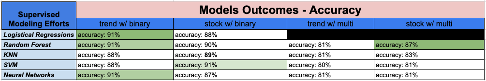

Final Analysis
{kind=link}
Model Champion: Random Forest
Our team, ultimately, decided that the Random Forest class using the multi-outcome data set would be the best model to help hospitals predict potential future deaths. The primary reasons for this is that with an 87% degree of certainty we could predict bands of deaths due to COVID-19 and there is a high degree of explaining the model outcomes with the attributes the model selected.
This would help with hospitals ability to prepare in advance for critical resources like staffing, supplies, and beds depending on which bin the model predicted would happen 10 days in the future.
Champion Model Summary
Champion Model Approach- Used the Google Trend data with Binary outcomes is split into a standard 80/20 test/train split with a random state of 42.
Standard Scaling is also applied due to the larger number included in the Stocks Data Set. The model itself uses a random state of 1 with 500 estimators and yielded a Testing score of 0.876.
Champion Model Findings- One of the most interesting findings is that the Current[ly] Hospitalized COVID-19 Patients was again the most important feature . The second most important feature is “covid symptoms”.
Top 10 features were from the Google Trend data set: can dogs get covid, lake, quarantine, stimulus, lungs. Top 10 features from the Stock Data Set are the Open & Close Price for Moderna Inc (MRNA).
Rounding out the top ten features is the Total Doses Administered. The least important features were also from the Google Trend data (anti-depressant, anxiety, biden, gig economy).
{kind=link}